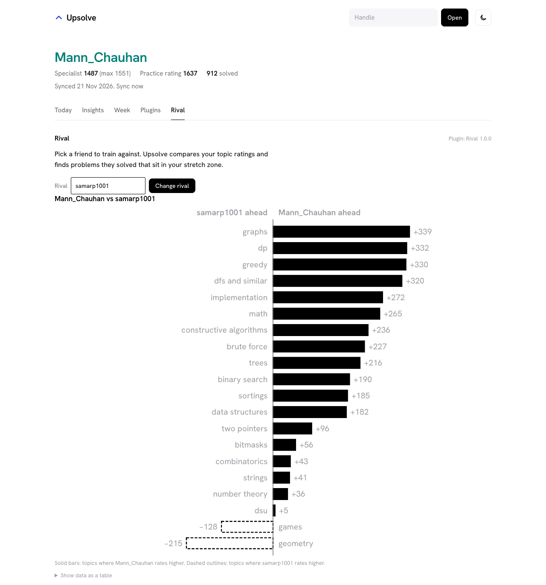

For the cross-dev team building a plugin for Upsolve (CS698B). Team The Syndicate.
| Live app | https://upsolve.mohitupawar.com |
| API docs | https://upsolve.mohitupawar.com/api/docs |
| Code | https://github.com/Wizminar/upsolve |
| Example plugin | plugins/rival/ in the repository |
| Demo slot | Saturday 28 November 2026 (base app and plugin demoed together) |
Upsolve is a Codeforces practice coach. A user enters a public handle; Upsolve imports their submissions, rates them per topic with an Elo-style model, and uses a logistic-regression model to estimate the chance of solving any problem. It recommends five problems a day at about a 50–70% chance, shows insights (topic ratings, contest history, activity), and builds a weekly plan. Everything your plugin needs (user data, topic ratings, predictions, recommendations) is available through the API and the plugin host described below.
The course asks for the cross-dev component to run inside the base app, not as a separate app. Upsolve supports this directly:
plugins/ with a manifest.json and one JavaScript (ES module) file.Upsolve page ├── Today | Insights | Week | Plugins | Rival | Your plugin tab ← slot "page" ├── Today view … your panel ← slot "today" ├── Insights view … your panel ← slot "insights" └── Week view … your panel ← slot "plan"

git clone https://github.com/Wizminar/upsolve.git cd upsolve python3 -m venv .venv .venv/bin/pip install -r requirements.txt .venv/bin/uvicorn app.main:app --reload --reload-dir app --reload-dir plugins
Open http://localhost:8000, enter a Codeforces handle (for example tourist) and wait for the first import (up to a minute; Codeforces allows one request every two seconds). Static and plugin files are served with no caching, so a browser reload picks up your edits.
You do not need to rebuild the training dataset. The trained model (data/model.json) is in the repository.
plugins/
streak/ ← folder name = plugin id (lowercase letters, digits, dashes)
manifest.json
plugin.js
{
"id": "streak",
"name": "Streak",
"version": "1.0.0",
"description": "Shows your current practice streak.",
"author": "Team name",
"entry": "plugin.js",
"slots": ["insights"],
"api_version": "1"
}
| Field | Required | Notes |
|---|---|---|
id | yes | Must equal the folder name. |
name, version | yes | Shown in the Plugins list. |
entry | yes | The ES module file inside the folder. |
slots | no | Where you draw: page, today, insights, plan. |
description, author | no | Shown in the Plugins list. |
If the manifest is invalid, the Plugins page and GET /api/v1/plugins say exactly what is wrong.
export default function register(host) {
const { h } = host.ui;
host.addPanel({
slot: "insights",
title: "Streak",
async render(el, ctx) {
const days = await host.api.activity(ctx.handle, 60); // [{day, submissions, accepted}]
const active = new Set(days.filter((d) => d.accepted > 0).map((d) => d.day));
let streak = 0;
for (let d = new Date(); active.has(d.toLocaleDateString("sv-SE")); d.setDate(d.getDate() - 1)) streak++;
await host.store.set("best", Math.max(streak, (await host.store.get("best")) || 0));
el.replaceChildren(
h("p", null, `Current streak: ${streak} day(s).`),
h("p", null, `Best seen: ${await host.store.get("best")} day(s).`));
},
});
}
Reload the page: a "Streak" panel appears at the bottom of Insights.
| Member | What it does |
|---|---|
host.apiVersion | "1" |
host.plugin | {id, name, version} from your manifest |
host.handle | Handle currently open in Upsolve (or null) |
host.addPanel({slot, title, render}) | Mount UI. render(el, ctx) is called each time the view is shown; ctx.handle is the current user. On Today, ctx.recommendations is passed; on Insights, ctx.topics; on Week, ctx.plan. |
host.store.get(key, {scope}) | Read a saved JSON value (undefined if none) |
host.store.set(key, value, {scope}) | Save any JSON value (max 256 KB) |
host.store.list({scope}), remove(key, {scope}) | List all values / delete one |
scope defaults to the current handle; use {scope: "_global"} for data shared across users | |
host.on(event, fn) | "handle" when the user switches handle; "sync" after an import finishes. Returns an unsubscribe function. |
host.notify(text) | Show a message in Upsolve's status bar (read out by screen readers) |
host.ui.h(tag, attrs, ...children) | Create HTML elements safely (text is never parsed as HTML) |
host.ui.s(tag, attrs, ...children) | Same, for SVG |
host.ui.dataTable(caption, headers, rows) | "Show data as a table" toggle for charts (accessibility) |
host.ui.rankOf(r), fillVar(r), pct(p), fmtDate(ts) | Codeforces rank name/colour, percentage and date formatting |
host.ui.charts.lineChart(...), heatmap(days), calibration(bins) | Upsolve's own SVG charts |
host.api)| Helper | Returns |
|---|---|
profile(h) | Contest and practice rating, counts, model in use |
topics(h) | Per topic: rating, attempts, solve rate, evidence level, focus flag, hardest solved |
topicHistory(h, tag) | Daily rating points (__overall__ for overall) |
ratingHistory(h), activity(h, days), attempts(h, {limit, tag}) | Contest history, submissions per day, grouped attempts |
recommendations(h, {count, topic, refresh}) | Problems with chance and reasons |
predict(h, problemId) | Chance of solving one problem + per-feature contributions |
training(h), setTraining(h, {topics, weekly_target}), plan(h) | Focus topics, weekly plan |
startSync(h), syncStatus(h) | Import another handle (e.g. a friend) and poll until done |
allTopics(), model(), feedback(h) | All tags, model report, how past recommendations turned out |
get / put / post / del(path, body) | Any endpoint, path relative to /api/v1 |
Errors throw an ApiError with a .status. A user endpoint returns 404 until that handle has been synced; call startSync, then poll syncStatus until status is "done" (see plugins/rival/plugin.js).
All endpoints are under https://upsolve.mohitupawar.com/api/v1 (or http://localhost:8000/api/v1). Full schemas and a "Try it out" button are at /api/docs; the OpenAPI 3 file is docs/openapi.json.
| Method | Path | Purpose |
|---|---|---|
| POST / GET | /users/{handle}/sync | Start an import (202) / its status |
| GET | /users | Handles already synced |
| GET | /users/{handle}/profile | Profile summary |
| GET | /users/{handle}/topics | Topic strengths |
| GET | /users/{handle}/topics/{tag}/history | Topic rating trend |
| GET | /users/{handle}/rating-history | Official contest ratings |
| GET | /users/{handle}/activity?days=365 | Submissions per day |
| GET | /users/{handle}/attempts?limit=&tag= | Grouped attempts |
| GET | /users/{handle}/recommendations?count=&topic=&refresh= | Recommended problems |
| GET | /users/{handle}/predict/{problem_id} | Chance for one problem |
| GET | /users/{handle}/feedback | Predicted vs actual for past picks |
| GET / PUT | /users/{handle}/training | Focus topics and weekly target |
| GET | /users/{handle}/plan | This week's plan |
| GET | /topics, /problems, /model, /health | Catalogue and model report |
| GET / PUT | /plugins, /plugins/{id} | Plugin list; switch on or off |
| GET / PUT / DELETE | /plugins/{id}/store/{scope}/{key} | Your plugin's storage |
curl -X POST https://upsolve.mohitupawar.com/api/v1/users/tourist/sync curl https://upsolve.mohitupawar.com/api/v1/users/tourist/sync # poll until "done" curl "https://upsolve.mohitupawar.com/api/v1/users/tourist/recommendations?count=3" curl https://upsolve.mohitupawar.com/api/v1/users/tourist/predict/1520A
CORS is open by default, so you can also call the API from your own page while experimenting, but the final plugin must run inside Upsolve.
The brief says the plugin "must not be overtly simplistic and must itself have data/adaptive/visualization components", but can rely on the base system's API for data and ML. A simple way to cover each:
| Requirement | How a plugin can meet it |
|---|---|
| Data | Read Upsolve data through host.api; save your own (user input, history, results) with host.store, which persists in Upsolve's database. |
| Adaptive | Use Upsolve's predictions (predict, recommendations, topic ratings) to drive your feature, or add your own simple rule or statistic that changes with the stored data. |
| Visualisation | Draw with host.ui.charts or your own SVG; add host.ui.dataTable and text labels for accessibility. |
role="img" with an aria-label, a legend, and host.ui.dataTable.<button> and <a> elements so everything works by keyboard.Wizminar/upsolve on GitHub and add your folder under plugins/.Notes on the hosted version: it runs on a free plan, so it sleeps after about 15 idle minutes (first visit then takes ~50 seconds) and its database can reset on restart. Data saved with host.store on the hosted site may therefore disappear; for development, run Upsolve locally.
Questions, bugs or API requests: contact Team The Syndicate (Mohit Shankar Pawar, Ashirvad Dwivedi, Chaitanya Kumar, Bishal Podder). If you need a new endpoint or field, tell us early so it can be added before the demo.